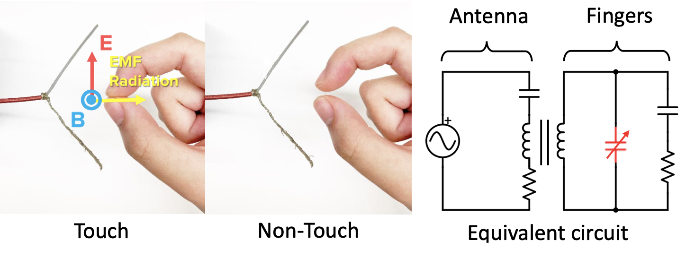

AtaTouch: Robust Finger Pinch Detection for a VR Controller Using RF Return Loss
Daehwa Kim, Keunwoo Park, Geehyuk Lee
CHI 2021
Honorable Mention Award
Abstract
Handheld controllers are an essential part of VR systems. Modern sensing techniques enable them to track users’ finger movements to support natural interaction using hands. The sensing techniques, however, often fail to precisely determine whether two fingertips touch each other, which is important for the robust detection of a pinch gesture. To address this problem, we propose AtaTouch, which is a novel, robust sensing technique for detecting the closure of a finger pinch. It utilizes a change in the coupled impedance of an antenna and human fingers when the thumb and finger form a loop. We implemented a prototype controller in which AtaTouch detects the finger pinch of the grabbing hand. A user test with the prototype showed a finger-touch detection accuracy of 96.4%. Another user test with the scenarios of moving virtual blocks demonstrated low object-drop rate (2.75%) and false-pinch rate (4.40%). The results and feedback from the participants support the robustness and sensitivity of AtaTouch.
Sensing Principle
We leverage the impedance change of an antenna when electromagnetically coupled with human fingers. When a high-frequency AC signal flows to an antenna, an electromagnetic field is induced (Figure 2 left). The human body is electrically conductive at radio frequency. Therefore, the electromagnetic field induces a current in the fingers near the antenna when fingers are aligned to the electric field of the antenna (arrows in Figure 2 left). Owing to the inductance components in the antenna and the fingers (Figure 2 right), their impedance is mutually coupled. As the pinching fingers are closed or opened, the capacitor component in the hand changes. This impedance change by the finger touch state subsequently changes the antenna return loss.
Prototype

Designed by Daehwa